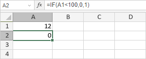
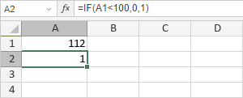

IF Funkcija
Funkcija IF je jedna od logičkih funkcija. Koristi se za proveru logičkog izraza i vraća jednu vrednost ako je TRUE, ili drugu ako je FALSE.
Sinaksa
IF(logical_test, value_if_true, [value_if_false])
Funkcija IF ima sledeće argumente:
| Argument | Opis |
|---|---|
| logical_test | Uslov koji želite da proverite. |
| value_if_true | Vrednost koja se vraća ako je rezultat TRUE. |
| value_if_false | Vrednost koja se vraća ako je rezultat FALSE. |
Napomene
Kako primeniti funkciju IF.
Primeri
Postoje tri argumenta: logical_test = A1<100, value_if_true = 0, value_if_false = 1, gde je A1 12. Ovaj logički izraz je TRUE. Dakle, funkcija vraća 0.

Ako promenimo vrednost A1 sa 12 na 112, funkcija vraća 1:
